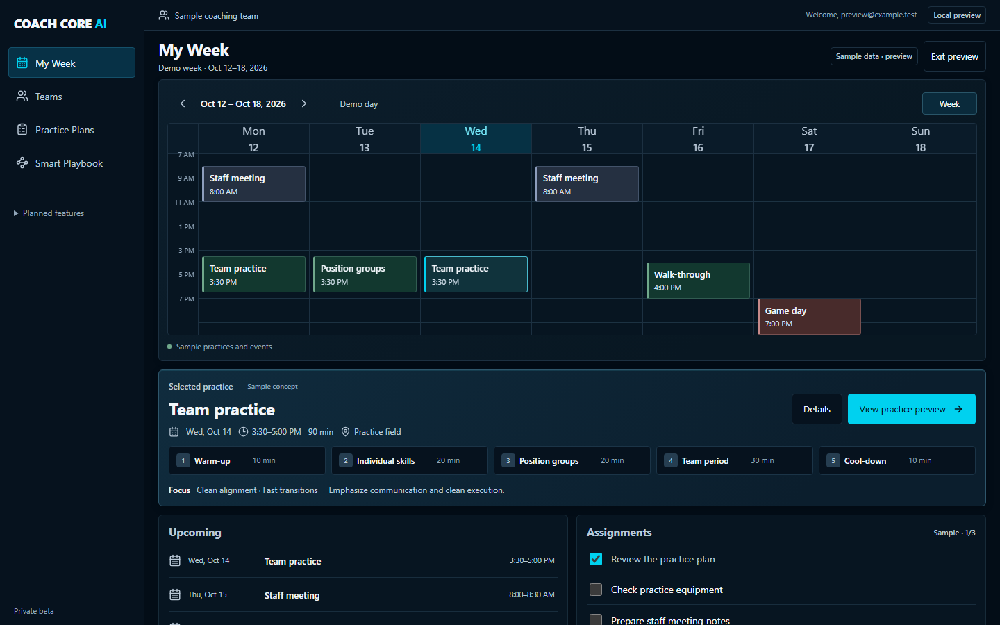
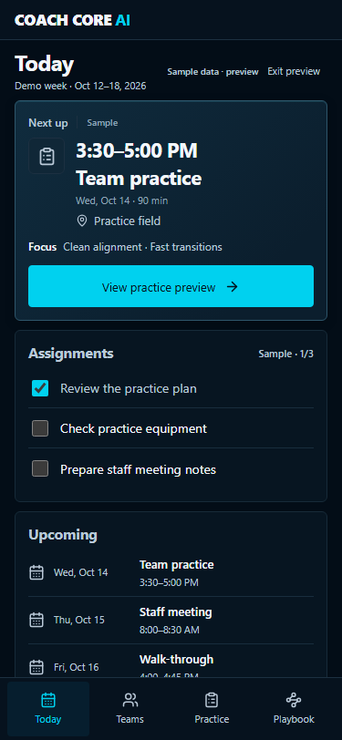

Visual approval pending. Stable labeled sample week, populated practice selected. No authenticated workflow acceptance.
Reload sample preview · Separate empty example · Changes and verification


Beside approved reference · Agenda and bottom clearance · Empty-state example